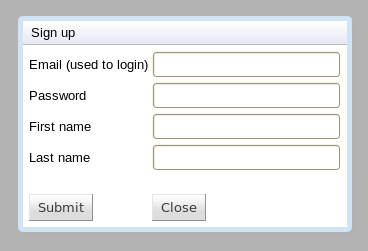
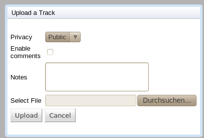
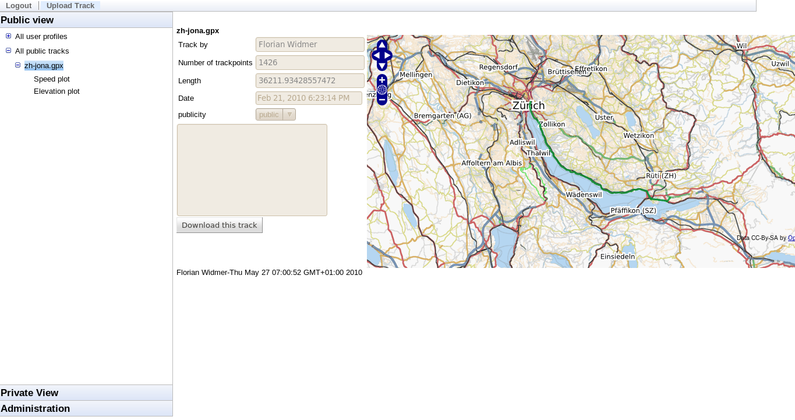
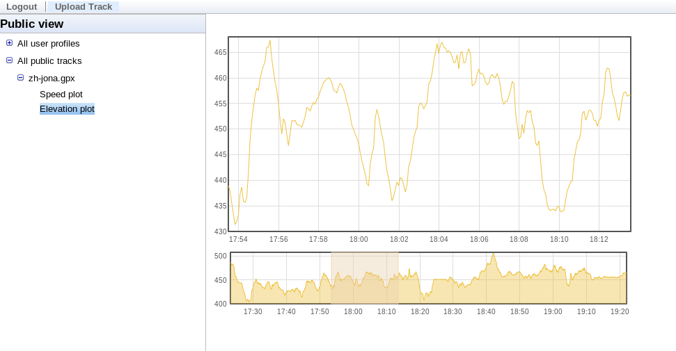
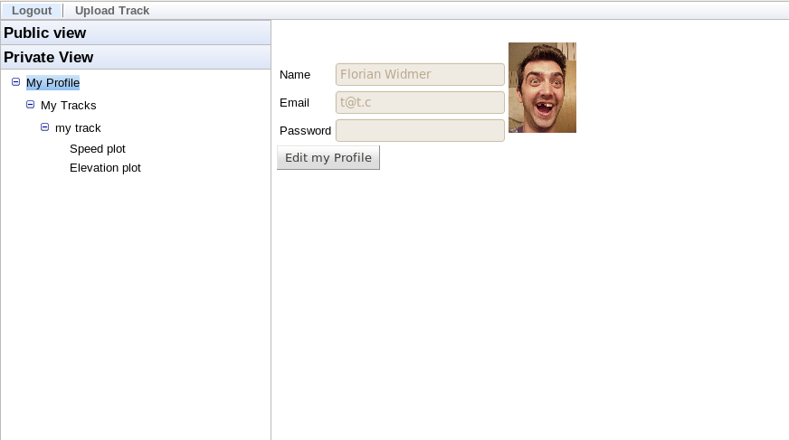

Footware Documentation
User Documentation
Access Footware
We assume that there is a correctly set up server accessible with the URL http://footware.org.
If this is not the case, see the setup documentation in the appendix to set a server up or use any already setup instance that you have at your disposal.
First step
Type in the URL http://footware.org in your favorite web browser. We strongly recommend the usage of a browser adhering to the W3 standards like Firefox, Chromium or Opera
At the top left corner you can see a Login and Sign up button. On the left side you can see a navigation area.
Sign up a new account
Press the Sign up button on the top left corner. The sign up dialog window show below appears.

sign up window dialog
Fill out the form and press Submit to sign up for Footware.
Login
Once you have a valid account you may log in. (Note that right after signing up you are already logged in)
Press the Login button on the top left corner. The login window appears.
Enter your email address and password and press Submit to login to Footware.
Uploading a GPX track
You can upload tracks using the button in the top left corner. Fill out the form and select the file to do so.
The options at your disposal are:
Privacy
|
How is allowed to see the track (Public: Everybody)
|
Enable comments
|
Are other users allowed to post comments on the track
|
Notes
|
Your own comment / notes for your track
|

GPX track upload window dialog
Browsing tracks
On the left side, you will see different views.
With the public view it is possible to browse all public tracks stored in Footware.
With the private view it is possible to view all tracks owned by you.

Track browsing on the left side, track details on the right

Elevation plot of a track
You can also display elevation and speed plots for the tracks. Select a time interval on the lower part of the plot to display more detailed information.
Search feature
Search for user profiles
In the public view it is possible to search for specific user profiles. To do so, fill in the search criteria at the bottom of the screen.

Profile view
Search for tracks
In the public view it is possible to search for specific tracks. To do so, fill in the search criteria at the bottom of the screen.
Downloading Tracks
by clicking download this track you can download the track in its original format.
Administration
As an admin user, it is possible to edit other users and their tracks. Log in and select Administration from the stacked frame on the left. You can now select users or tracks from the two tables.
Developer Informations
Footware is developed in Java using Eclipse.
Because Footware uses and depends upon GWT, the GWT plugin for Eclipse is strongly recommended and and the GWT SDK is required. The binaries and documentation on how they can be installed can be found on the GWT Homepage: http://code.google.com/webtoolkit/. When GWT is setup correctly, the project can be imported in Eclipse as an Eclipse project.
Getting the Source code
The source code of Footware can be found in a git repository on github:
http://github.com/abrauchli/Footware
License
Footware is licensed under Apache License, Version 2.0.
Basic Code Architecture
The server and the client code are separated in the packages org.footware.client respectively org.footware.server.
Objects used by both the server and the client, like the DTO classes used for transporting the objects between the server and the client reside in the org.footare.shared package and it's sub packages.
Internal datastructure for tracks
Track point:
The most specific object is the Trackpoint. It has fields for longitude, latitude, elevation, time and speed and represents a single point in a track segment.
Track segment:
Then the Track segment Object has a list of track points forming the segment. Additionally it has fields for meta information like length, maximum speed, minimum speed, max elevation, min elevation and average speed.
It exists because there may be multiple "sub-tracks" in a track file which are separated by time. Individual recordings on a single day for instance, all belonging to the same track.
Track:
At the top we have to Track Object which is formed of multiple segments.
The track represents all segments held in the same track file.
A track object holds the meta information like comments, filename of the file imported, the full path to the saved file in the server file system, tags associated to the track, number of trackpoints, start time of the track and of course a list with all segments of the track.
Track import overview
Track import is done with the FileUploadServlet. Over a multipart encoded form the file is sent to the servlet. There as first step, the filename is extracted from the request. Because Internet Explorer returns a different value than the other browsers, the filename has to be processed additionally to get the filename without path (full path information from the file path of the client). Then the file is stored on the server in the directory import/user_email_adress/filename. Because it is possible that the user has uploaded files with the same filename already, the filename is adapted in a way that no file with the filename already exist. Then the file gets read again from the file system and parsed. This ensures that we never have files in the database which are not stored on the server. At the end of the parsing we have a Track Object that is stored in the database. The different visualizations are now computed on this Track Object and are also stored in the database.
Adding libraries
To add new libraries place the jar file(s) of the library to the directory war/WEB-INF/lib and add them to the Eclipse class path.
Client pitfalls
In Footware nearly any java libraries can be used. But it has to be taken into account that not GWT classes can only be used on the server and not be transferred to the client without additional effort like writing transport classes.
The FootwareMapWidget uses a GWT wrapper for openlayers. Be prepared to look directly in the javascript code of openlayers because gwt-openlayers lacks currently on documentation.
Object transfered from the server to client over GWT-RPC need to implement Serializable (from java.io). Additional they need an explicit default Constructor.
Adding support for other track formats
The architecture of Footware allows it to easily add support for other formats than gpx (like for instance KML or native NMEA). To do so, you simply have to implement an Importer implementing the Interface TrackImporter which parses the format and transfers it to the object structure used by Footware. The new importer should then be added to the to the importerMap in the TrackUploadServlet in the following form:
importerMap.put("gpx", new GPXImport());
Where gpx is the extension of gpx files and GPXImport is the Importer object.
Appendix
Installation guide
To compile Footware and generate a war container execute, make sure that ant is installed. Then run ant war in the base directory of Footware. This generates the file footware.war which you can then deploy to an application server of your choice. Footware should now run out of the box.
Installing the database
By default Footware comes with a pre-set up H2 database. Should you wish or need to set it up yourself, go to (replace with your URL) http://footware.org/console to access the H2 database management tool. Select the DB to use (probably jdbc:h2:footware with user sa and no password) and log in.
You may then copy-paste the DB setup queries which are found in the Footware source in the db/create.sql file.
Alternatively you may choose to set up any other relational JDBC database. This may require to adapt the create.sql file to the given database DML.
Troubleshooting
If problems with file upload occur, ensure that your server allows the upload of big files. Also check that the server has the required write permission to the tmp and import directories inside the Footware application.
Known Issues
File upload
The file upload in hosted mode (debug environment of GWT, which is basically a customized Jetty server) has problems with file upload. The upload breaks randomly when the file size exceeds the limit of what is kept in memory (when files are written temporarily to the disk). We suspect timeout issues but had no time to investigate further on this issue...
Servlet url mapping
The url mapping of the servlets are currently tested and working with the Hosted mode. If a servlet is not found when deployed on an application server, adapt the war/WEB-INF/web.xml file.